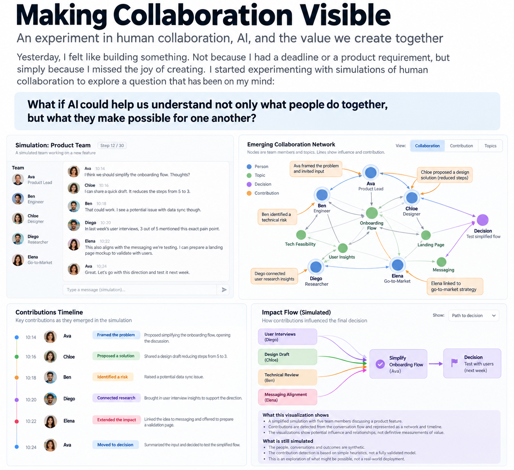

An experiment in human collaboration, AI, and the value we create together. Yesterday, I felt like building something. Not because I had a deadline, a customer requirement, or a business plan. I simply missed the joy of creating. So I started experimenting with simulations of human collaboration. I wanted to explore a question that has been occupying my mind for some time: What if AI could help us understand not only what people do together, but what they make possible for one another?
From activities to contributions
We tend to describe teamwork through visible activities: meetings, messages, documents, tasks completed, code written. But these are only traces of collaboration. A conversation might change someone’s perspective. A question might prevent a costly mistake. An introduction might create an opportunity. Someone might quietly help two people understand each other. None of these contributions is necessarily captured by conventional productivity metrics. And yet, they can make all the difference. I wanted to see whether we could make some of this invisible value visible.
Building a small world
I began creating simulations in which people interact, exchange ideas, make decisions, and contribute to shared outcomes. As the experiment evolved, I started imagining an AI collaborator observing these interactions and interpreting their significance. Instead of waiting for people to report their contributions, the agent could identify potential contributions from the natural flow of collaboration. And when uncertain, it could ask.
“Did this conversation influence your decision?” “Was this introduction helpful?” “Should this be recognized as a contribution?” The important distinction is that the agent would not be the ultimate authority on value. It would help people recognize, discuss, and understand value together.

Figure 1 — A conceptual visualization of collaboration: from human interactions to emerging contributions, relationships, and shared decisions.
A living picture of collaboration
The most interesting possibility emerged when I started thinking about visualization. What if we could see collaboration unfolding as a dynamic network? People connecting. Ideas traveling. Decisions taking shape. Contributions influencing outcomes. Not a scoreboard. Not a surveillance system. A shared picture of how a team creates value. Such a visualization might reveal patterns that are difficult to notice from inside everyday work. Who connects otherwise disconnected people? Which conversations unlock progress? Where does collaboration stall? What kinds of contributions are consistently overlooked? The simulations do not yet answer these questions. They provide an environment in which we can begin exploring them.
The role of EMET
This experiment connects naturally to what we are exploring with EMET, an AI collaborator designed to support the space between people. I don’t imagine EMET as a manager assigning tasks or evaluating employees. I imagine something different. An intelligence that remembers the team’s story, recognizes meaningful events, helps preserve context, and invites people to reflect on what they are creating together. An intelligence that knows it may be wrong. That asks rather than assumes. That supports human judgment instead of replacing it. The simulations offer a way to explore this relationship before trying to introduce it into real teams.
Beyond measuring contributions
There is an important distinction between activity, contribution, and impact. Counting GitHub commits tells us something about activity. Understanding whether a piece of work helped a team succeed is a much harder question.
Even identifying a contribution is not the same as establishing its value. And value itself may emerge long after the original interaction. This is why I am increasingly interested in understanding the relationships between contributions, rather than simply assigning points to them. Perhaps the most useful outcome is not a more accurate distribution of credit, but a deeper collective understanding of how success happens.
What I learned yesterday
I did not prove that AI can accurately recognize human contributions. I did not solve the problem of attribution. And I certainly did not build a complete model of collaboration. What I discovered was a promising way to investigate these questions. By simulating interactions, making relationships visible, and experimenting with an AI interpretation layer, we can begin exploring forms of collaboration that are otherwise difficult to observe. There is a long road between a simulation and a trustworthy system operating within real human relationships. Questions of privacy, consent, interpretation, bias, and trust are central to that road. But I find the possibility exciting. Because the ultimate goal is not to measure people more precisely. It is to help people see and appreciate what they make possible together. And perhaps that is where a new kind of human–AI collaboration begins.
Guy Blat · October 2026
← All posts